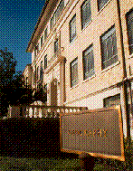

Last Seen on 24th Street before Its DisappearanceThese materials were developed by Kenneth E. Foote and Peter H. Dana, Department of Geography, University of Texas at Austin, 1996. These materials may be used for study, research, and education in not-for-profit applications. If you link to or cite these materials, please credit the authors, Kenneth E. Foote and Peter H. Dana, The Geographer's Craft Project, Department of Geography, The University of Colorado at Boulder. These materials may not be copied to or issued from another Web server without the authors' express permission. Copyright © 1996. All commercial rights are reserved. If you have comments or suggestions, please contact the authors or Kenneth E. Foote at k.foote@colorado.edu.
To answer this question you will map the outline of the Geography Building not once, but many times. Each map will be drafted from a different source including: a 1:25,000 USGS topographic sheet; both paper and digital 1:1,200 University of Texas Physical Plant Engineering Plans; a paper 1:1,200 City of Austin Engineering Map; an air photograph; uncorrected code-phase GPS; differential code-phase GPS; and points surveyed with a total station.
Each of these maps will be drafted into a different layer of a
Microstation design file, as noted below. Each new layer will drafted with
the others turned off so that you cannot see the differences until later.
Your final map will be a composite showing the many different outlines
of the Geography Building and its immediate area. The map show be designed
to highlight the differences of locational precision resulting from the
varying sources employed and will note the range of imprecision involved.
This file, utcampus.dgn, contains the entire campus. Level 1 includes all roads and all building, except the outline of the Geography Building. The outline of the Geography Building is in level 2.
The coordinates of this file are SPC 1927, Texas Central Zone. We will use these for all subsequent coverages, converting other coordinates as necessary.
Register the topo sheet to your digital file using the SPC coordinates listed on the map.
Set the symbology for this tracing--color, line weight, and line type.
Trace the outline of the Geography Building.
Register the engineering map to your digital file using the SPC coordinates found on the map.
Set the symbology for this tracing.
Trace the outline of the Geography Building.
Register the engineering map to your digital file using the SPC coordinates found on the map.
Set the symbology for this tracing.
Trace the outline of the Geography Building.
Register the air photo to your digital file by matching features of the photograph to features on the campus digital file (level 1).
Set the symbology for this tracing.
Trace the outline of the Geography Building.
Once you have made the measurements and converted them to NAD 27 SPC:
Turn off levels 1-6.
Set the symbology for this tracing.
To add the outline of the Geography Building to your file, "key-in" the coordinates in the Microstation command window or use the "Precision Input" menu.
Once you have made the measurements and converted them to NAD 27 SPC:
Turn off levels 1-7.
Set the symbology for this tracing.
To add the outline of the Geography Building to your file, "key-in" the coordinates in the Microstation command window or use the "Precision Input" menu.
Once you have made the measurements and converted them to NAD 27 SPC:
Turn off levels 1-8.
Set the symbology for this tracing.
To add the outline of the Geography Building to your file, "key-in" the coordinates in the Microstation command window or use the "Precision Input" menu.